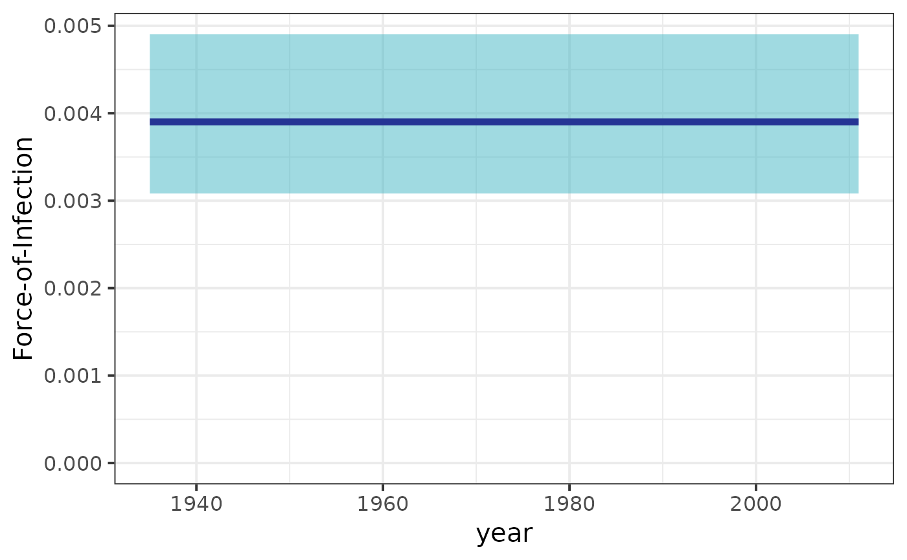

plot_foi.RdThis function generates a force-of-infection plot from the results obtained by fitting a serological model. This includes the corresponding binomial confidence interval. The x axis corresponds to the decades covered by the survey the y axis to the force-of-infection.
plot_foi(
seromodel_object,
cohort_ages,
max_lambda = NA,
size_text = 25,
foi_sim = NULL
)Stanfit object containing the results of fitting a model by means of run_seromodel.
A data frame containing the age of each cohort corresponding to each birth year.
TBD
Text size use in the theme of the graph returned by the function.
TBD
A ggplot2 object containing the force-of-infection vs time including the corresponding confidence interval.
data(chagas2012)
serodata <- prepare_serodata(chagas2012)
seromodel_object <- run_seromodel(
serodata = serodata,
foi_model = "constant",
iter = 1000
)
#> serofoi model constant finished running ------
#> [,1]
#> foi_model "constant"
#> dataset "COL-035-93"
#> country "COL"
#> year "2012"
#> test "ELISA"
#> antibody "IgG anti-T.cruzi"
#> n_sample "747"
#> n_agec "72"
#> n_iter "1000"
#> elpd "-92.75"
#> se "6.4"
#> converged "Yes"
cohort_ages <- get_cohort_ages(serodata)
plot_foi(
seromodel_object = seromodel_object,
cohort_ages = cohort_ages,
size_text = 15
)
